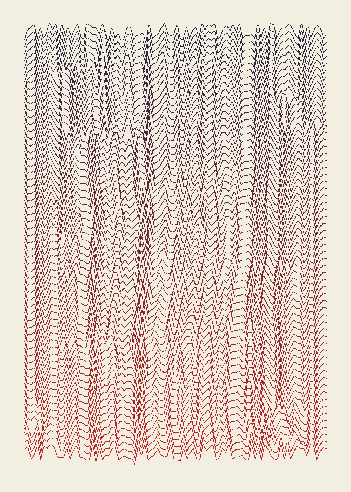

The same decay as the previous piece, with a first line from outside: the second sentence of Wikipedia's "Scriptorium" (fetched today), “The term has perhaps been over-used—only some monasteries had special rooms set aside for scribes.” It is about the thing it is subjected to.
Generation 60, as the last scribe wrote it: fcrm Tbe bopperhappssaver-ned—on11ybn somemonassterjess hd spej roomss set forr seribee. aside
Honest verdict: the lines hold their rhythm better than my own sentence's did, because this one is longer and the errors are local. Less erosion, more weave. Weaker than the first.